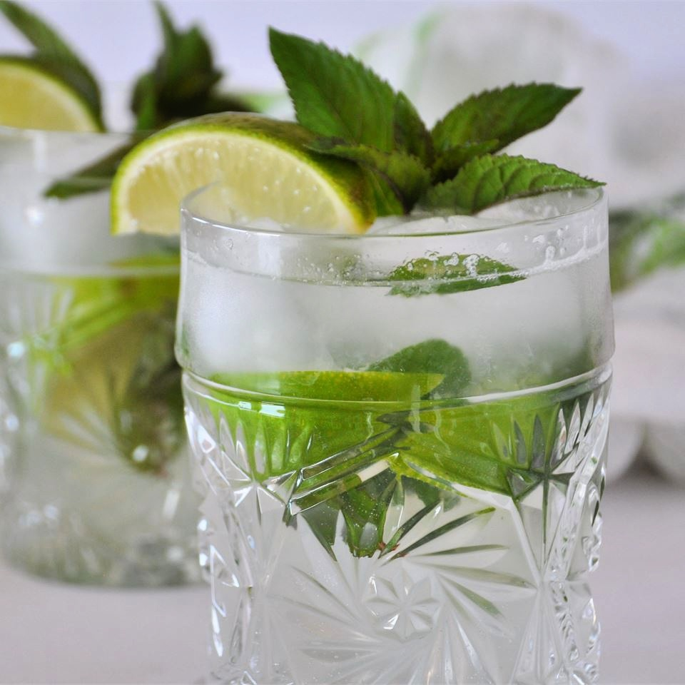

Mojito

Description
Easy recipe for homemade Mojito
- Prep: 10 mins
- Total: 10 mins
- Servings: 1
- Yield: 1 cocktail
Ingridients
- 10 fresh mint leaves
- 1/4 lime, cut into 4 wedges
- 2 teaspoons white sugar, or to taste
- 1 cup ice cubes
- 1 1/2 fluid ounces white rum
- 1 cup club soda
Steps
-
Place mint leaves and 1 lime wedge into a sturdy glass.
Use a muddler to crush the mint and lime to release the mint oils and lime juice.
Add 2 more lime wedges and the sugar, and muddle again to release the lime juice.
Do not strain the mixture. Fill the glass almost to the top with ice.
Pour the rum over the ice, and fill the glass with carbonated water.
Stir, taste, and add more sugar if desired. Garnish with the remaining lime wedge.
Back